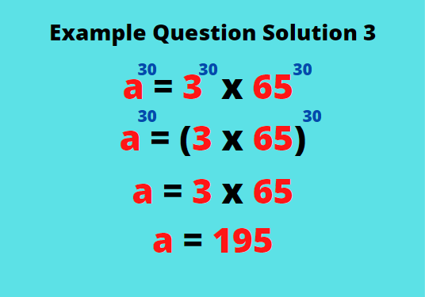

Exponents are a shortened version of repeated multiplication of the same number.
General Form: a b, which implies a x a x a x a x ... (b times)
Example: 2 6 implies 2 x 2 x 2 x 2 x 2 x 2 = 64
Important-to-note:
1. Any number with the power of 2 can be pronounced as "squared" and with the power of 3 as "cubed", such as 5 2 ('five squared') and 5 3 ('five cubed').
2. Powers of 1 are usually not written down because its value is equal to itself.
Just like addition, subtraction, multiplication and division, exponents have laws, too! They can be manipulated to make counting easier, here's how:

a. Product of Powers (Addition of Exponents)
This law can be applied when multiplying two numbers with the same base. Their exponents may be different or the same.
For example we have: 43 and 45,we can add them up like below:
43 x 45
= 4(3+5)
= 48
If you think this law is pretty straightforward, the next one should be too.

b. The Quotient Rule (Subtraction of Exponents)
Similar with the Product of Powers Law, this rule should only be applied when the two numbers have the same base.
Here's an example, let's say we would like to divide 34 by 33:
34 ÷ 33
3(4-3)
31 = 3
bi. Negative powers
For some cases, a smaller exponent may be divided by a larger one. As you might have speculated, the smaller exponent should be subtracted by a larger one, resulting in a negative exponent. Not to worry because negative exponents, in fact, do exist. We can represent them as fractions. The example below should put this explanation into application:
Let's say we'd like to divide 76 from 74,
74 ÷ 76
= 7(4-6)
= 7-2
= 1/72 = 1/49
bii. Power of Zero
Subtraction of the same number always leads to zero. Just like negative powers, zero powers exist as well. Anything to the zero-th power is always equal to 1. Mathematicians decided so to make computations easier. Here's an example:
310÷310
= 3(10-10)
= 30
= 1
Pro Tip:
Remember that anything to the power of zero is equal to 1. This applies to every number or notation. Even really huge numbers like 1000, or complex equations like [n(n+1)-1001]. This comes in handy in solving olympiad-based problems.
c. Multiplication of Powers
Powers can also be multiplied. It might be confusing how a form of multiplication can be multiplied even further, but let's take a look at this example:
(73)2
= 7(3 x 2)
= 7 6
That's a simple example of an application of this law. Here's how to avoid confusion between using this law and the Product of Powers law:
When there are two of the same bases with separate exponents involved, use the Product of Powers law, while if there's only one base with two exponents in brackets, use the Multiplication of Powers law.
For example we have 33 x 36 and (33)6.
We can see that 33 x 36 has the same base, but two separate exponents. We will use the Product of Powers law.
33 x 36
= 3(3+6)
= 39
Whereas (33)6 has only one base and two different exponents, the Multiplication of Powers can be used for this case.
(33)6
= 3(3 x 6)
= 318
As you can see, the two results are very different. It is crucial not to mistaken one rule for the other.
ci. Distribution of Powers
Just like multiplying a common factor in algebraic notations, powers can be distributed as well. This is also a common mistake between students, it is important that we know the concept thoroughly.Let's say we have an expression (xy)a.
To expand this expression, we should distribute the exponent 'a' to both x and y like so:
(xy)a = xaya
This should not be confused with xya as these two expressions have different values. We can easily see the difference when we expand them like below:
(xy)a = xaya --> xya = x(y)a
We can see that xya only applies the exponent to the variable it's attached to. We need a pair of parentheses to indicate that the exponent is applied for both variables.

d. Division of Powers
Lastly, exponents can be divided. Though this is not common, some exponents are divided using fractional exponents or roots (e.g. the power of one-third can be expressed as a cube root).
Here's an example of this law's application:
3√(x6y3)
= (x6y3)1/3
= x(6 x 1/3)y(3 x 1/3)
= x2y1
= x2y
The same rule for Multiplication of Powers applies for division, too. With the parentheses, the exponent applies for both. Without the parentheses, the exponent only applies for the base on which the exponent is attached to. For roots, the division of the exponent is only applied to the terms or variable under the root sign. Other terms outside the roots sign are not affected.
di. Fractional Exponents
From the result of the division of powers above, some exponent results as a fraction. Not to worry because it can simply be represented just like before.
We'll take (22)1/3 as an example, from which:
(22)1/3 can be changed into (22 x 1/3 ) using the Multiplication of Powers Law.
So, we have (22/3) which can be separated into:
3√22 = 3√4
As we can observe from the numerator of the power goes 'inside' the root, while the denominator acts as index for the root as stays 'outside'.
So, have you noticed how beneficial exponents are? With exponents, we are saved from having to tediously multiply the same number repetitively. If you think these have made counting easier, more rules are coming to simplify counting even more!
We've been talking about all the rules that apply to numbers with the same base, but what about the same power? Though these might not be very common, we can derive some logic and make sense of these rules. Similar with the laws we've discussed before, there will be one for addition, subtraction, multiplication, and division. However, this time, we will be manipulating the base instead.
a. Addition of the Same Power
Do you happen to still remember the binomial expansion rule for two terms to the power of 2? Maybe it'll ring a bell when you see (a+b)2 = a2 + 2ab + b2. We will be using this rule and some of its other variations for this discussion.
We can change (a+b)2 = a2 + 2ab + b2 into the form a2+ b2 = (a+b)2 - 2ab.
This form is now more recognizeable (as you can see, they have the same exponents). This method might not be needed in computing numbers, but is very useful in simplifying or computing algebraic expressions. Let's use it on an example to make this more interesting.
Let's say we have the following question, with its detailed solution on the right:
b. Subtraction of the Same Power
Now just as you may have expected, we are going to use the opposite formula for this one. We will now use (a-b)2 = a2 - 2ab + b2 as an example.
We will change it into a2 + b2 = (a-b)2 + 2ab.
This is similar to the previous rule, but the rule you choose to use will depend on the information given. This next question might explain this better.
c. Multiplication of the Same Power
This rule is a lot more simple than the previous two we've discussed before. For multiplication and division of the same base, we can directly 'merge' the bases or multiply them together and just apply the exponent.We can see this method being used in the example below:

d. Division of the Same Power
Similar to the multiplication of the same base rule, we can directly multiply the bases and place one exponent to represent both exponents. This has an obvious correlation with the distribution of powers law we discussed before. Here's another example to make this clear:
Sometimes we see unusual expressions of exponents like 332. The key to solving this is not to count it manually. It would probably take hours to find the actual number as a solution, and most exams don't generally ask you to solve it literally.
What we can do is solve the exponent first or from the 'top'. Similar to order of operations, we cannot solve this by cubing 3, but instead squaring the exponent (the small 3) first. This is what it looks like:
332 = 3(32) = 39
NOT 332 = (33)2 = 272
(because 272 = (33)2 = 36 ≠ 39)